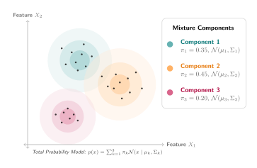

Gaussian Mixture Models
Gaussian Mixture Models (GMMs) [5] are among the simplest generative models capable of learning an unknown probability density distribution from a data collection. Generally, a GMM consists of two primary operational steps: component assignment and conditional emission. The goal of the component assignment step is to map a recorded observation to a lower-dimensional discrete latent variable representing cluster membership. This latent variable follows a categorical probability distribution based on mixture weights that is easy to sample from. Conversely, the conditional emission step transforms these sampled latent components back into the original data space by generating values from the selected component's specific Gaussian distribution.
Once a GMM is trained, it can be used as a generative model. Because the latent space consists of a discrete set of sub-populations, generating new random observations requires first sampling a specific component from the model's categorical distribution. Each of these latent components is defined by its own mean vector and covariance matrix, allowing the model to capture complex, multi-modal data structures.

Expectation-Maximization Algorithm
This module implements a Neural GMM trained via a hybrid Expectation-Maximization (EM) algorithm. Unlike standard GMMs where the mixing coefficients $\pi _{k}$ are treated as static scalar parameters updated globally, this architecture parameterizes component assignment dynamically using an Artificial Neural Network (ANN). The network acts as an amortized inference engine, mapping an arbitrary input data point directly to a categorical probability distribution over the $K$ Gaussian clusters.
The optimization loop alternates between exact analytical maximization for the Gaussian geometry and gradient-based optimization for the neural allocator through a multi-stage process.
Amortized Allocation Step
The training data $X$ is passed through the predictor network. A softmax activation maps the raw network outputs into a valid probability distribution of mixing weights $\pi_k(x_n)$ such that $\sum_{k=1}^K \pi_{nk} = 1$:
\[\pi _{k}(x_{n}) = \frac{\exp \left( \text{net}(x_{n})_{k} \right)}{ \sum_{j=1}^{K} \exp \left( \text{net}(x_{n})_{j} \right)} .\]
Expectation Step (E-Step)
The module computes the log-probability density of the multivariate Gaussian components using a diagonal covariance structure $\left( \Sigma_k = \text{diag}(\sigma_k^2) \right)$. To protect against floating-point underflow, calculations are evaluated purely in log-space using the Log-Sum-Exp reduction trick to resolve the latent posterior responsibilities ($\gamma _{nk}$):
\[\log \left( \text{Joint}_{kn} \right) = \log (\pi _{kn}+\epsilon )- \frac{1}{2}\left[D \log (2\pi ) + \sum_{d=1}^{D}\log (\sigma _{kd}^{2}) + \sum_{d=1}^{D}\frac{(x_{dn} - \mu_{kd})^{2}}{\sigma _{kd}^{2}}\right] \\[0.5cm] \gamma _{kn}=\frac{\exp \left( \log \left( \text{Joint}_{kn} \right) \right)}{ \sum_{j=1}^{K} \exp \left( \log \left( \text{Joint}_{jn} \right) \right)}.\]
Analytical Maximization Step (M-Step)
Using the computed soft responsibilities, the spatial locations $(\mu _{k})$ and scale structures $(\log \left( \sigma^2_k \right))$ of the Gaussian clusters are updated directly using exact closed-form Maximum Likelihood Estimation (MLE) equations. This execution bypasses slow gradient updates for the clusters:
\[\mu _{k}=\frac{\sum _{n=1}^{N}\gamma _{nk}x_{n}}{\sum_{n=1}^{N} \gamma_{nk}+\epsilon} \\[0.5cm] \sigma _{kd}^{2}= \max \left( \frac{\sum_{n=1}^{N} \gamma_{nk}(x_{nd} - \mu_{kd})^{2}}{\sum_{n=1}^{N}\gamma_{nk} + \epsilon }, \tau \right),\]
where $\epsilon = 10^{-8}$ is a machine-stability pad and $\tau = 0.0025$ is a hard variance floor preventing cluster collapse.
Neural Optimization Step
Because the predictive allocator network cannot be updated analytically, the objective function isolates the network parameters by framing it as a supervised training problem. The network is optimized over shuffled mini-batches using Stochastic Gradient Descent to minimize the Negative Log-Likelihood (NLL) through a logit cross-entropy loss function, driving network predictions to match the calculated E-step targets:
\[\mathcal{L}_{\text{NLL}}= - \sum_{b\in \text{batch}} \sum_{k=1}^{K} \gamma_{bk} \log \left( \pi _{k}(x_{b}) \right).\]
Structural Advantages
This hybrid architecture provides distinct operational enhancements over traditional clustering methods. Traditional GMMs require evaluating distance metrics against all $K$ clusters to categorize a new, unseen data point, but this framework enables fast out-of-sample inference. Once training concludes, a single forward-pass through the neural network immediately returns cluster assignment probabilities.
Furthermore, the mathematical routines use 3D tensor broadcasting across data dimensions, cluster configurations, and data samples, compatible with accelerated hardware computing architectures via protocol.device. Moreover, this implementation is paired with numerical resilience, as the integration of log-space transformations, using stability pads and variance constraints safeguarding the software environment against runtime arithmetic exceptions during intensive training iterations.